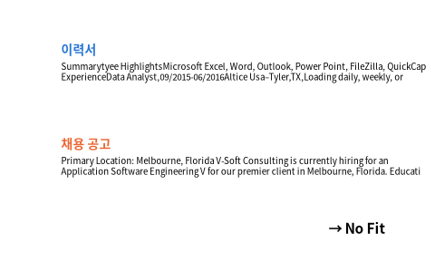

Hugging Face cnamuangtoun/resume-job-description-fit: 영어 이력서 글 + 채용 공고 글 쌍 약 8천 개, 맞음 (Good Fit) · 가능 (Potential Fit) · 안 맞음 (No Fit) 세 단계

| resume_text | job_description_text | label |
|---|---|---|
| Professional SummaryOver 10 years of combined experience in the financial, autom | Who we are:Founded in 2017, Gatik is the leader in autonomous middle mile logist | Good Fit |
| Professional ProfileExpert in Functional Testing .6-Year Record of Proven Result | Role: Java Developer Duration: 12 months Required Skills Developed web applicati | No Fit |
| SummaryHighly motivated Sales Associate with extensive customer service and sale | Primary Location: Melbourne, Florida V-Soft Consulting is currently hiring for a | No Fit |
| HighlightsProficient inObjective - CJavaC/C++Prior experienced inJavaScriptHTMLP | Location: Tampa, FL Exp: 7-10 Yrs SPOC: Tushar Kshirsagar Key Skills: Angular 10 | No Fit |
| SummaryQuality Assurance - Analyst9+ years Tandem based testing/implementation e | About Grainger Grainger is a leading broad line distributor with operations prim | Good Fit |
| Professional SummaryHighly skilled software development professional bringing mo | Position Type Full time Type Of Hire Experienced (relevant combo of work and | Good Fit |
| 열 | 종류 | 빈칸 | 고유값 수 | 범위 · 대표값 |
|---|---|---|---|---|
| label | 글자 · 범주 | 0 | 3 | 가장 흔한 값: No Fit (48.7%) |
| resume_words | 숫자 | 0 | 348 | 84 ~ 2738 (평균 691.4) |
| job_words | 숫자 | 0 | 67 | 33 ~ 1254 (평균 402.9) |
| ① 한 행 | (이력서, 공고) 한 쌍 |
| ② 입력 X | 이력서 글 · 공고 글 (단어 빈도, 두 글의 겹침) |
| ③ 출력 y | 맞음 / 가능 / 안 맞음 |
| ④ 평가지표 | 정확도 + 단계별 재현율 |
| ⑤ 기준선 | 가장 흔한 단계 |
문제를 정할 때 처음 채워 보는 칸들입니다. 여기서 끝이 아니라, 시험 데이터를 어떻게 나눌지 · 틀렸을 때 손해가 얼마인지 · 예측 시점에 정말 알 수 있는 값인지 같은 칸을 더 붙일수록 좋은 문제가 됩니다.
baseline (always 'No Fit'): accuracy 48.7% TF-IDF pair + logistic : accuracy 53.4%
누가, 왜, 어떻게 만든 데이터인지 직접 확인해 보세요.
인턴 · 산학협력 · 프로젝트 주제를 고를 때 참고하세요 (일반적인 예시).